Origami-based passive actuator integrated with layer jamming
Prototyped an origami-based passive actuator that can reconfigure itself and engage with a human user during various activities. The work included: (1) a lower-limb human model to predict forces and joint torques, verified against forward-dynamics simulation; (2) an origami prototype integrated with a pneumatic chamber for layer jamming; and (3) a 2D origami pattern with multiple degrees of freedom that constrains motion in three directions.
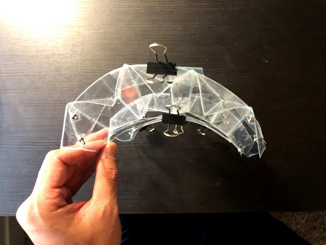
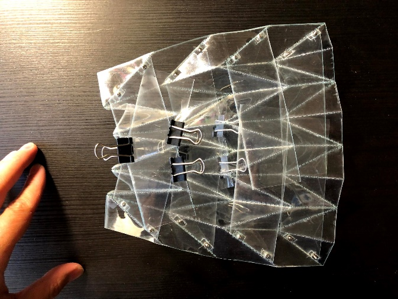
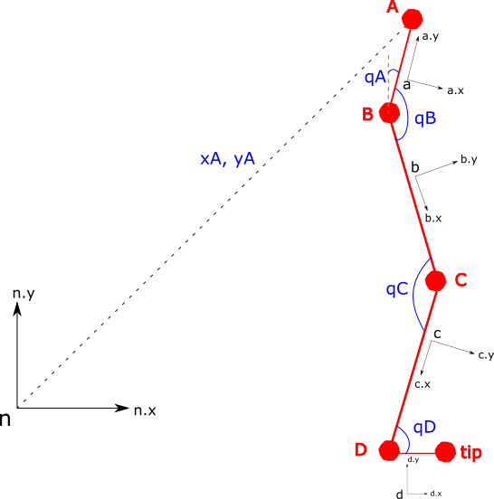
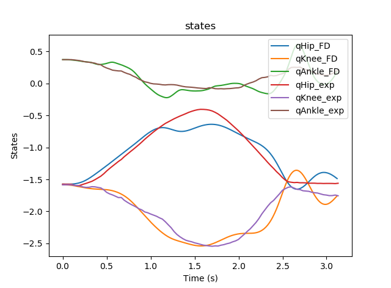
An approach for pain evaluation in MRI
Designed an MRI-compatible pneumatic stimulator to evaluate pain response, integrating the device with a pneumatic valve and tubing and characterizing its output. The stimulating tip (0.8 mm radius) produces an output pressure that is a linear function of the input pressure, P = 3.6981x + 5.45, reaching the pain threshold at an input of about 12 psi. Also wrote a human-computer interface in LabVIEW to control the valve output.
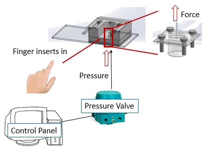
3D printing system for high-temperature bio-compatible material
Tested the hardware of a compact (<2.2 kg), high-precision (up to 50 µm) 3D printing system capable of high extrusion rates (up to 8500 mm/min) and high working temperatures (up to 420°C), and ran ASTM mechanical property tests (tensile, compression, bending) on the printed objects. Main contribution: hardware testing and mechanical characterization of the printed parts.
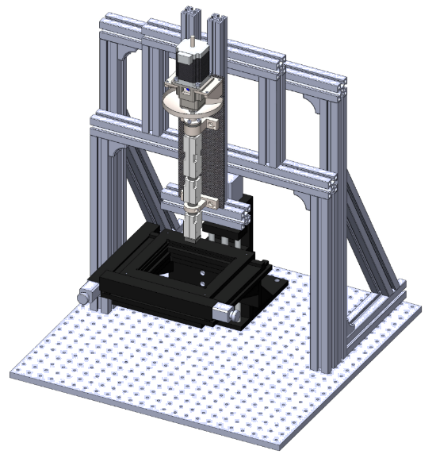
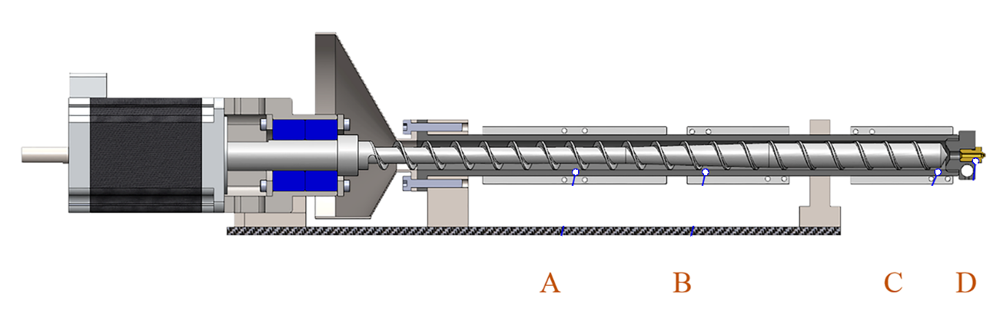
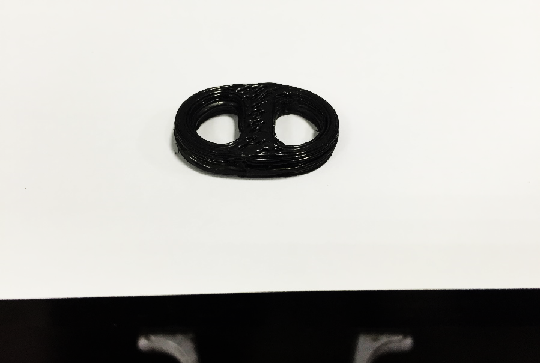
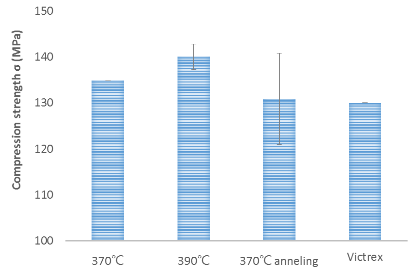
A precision capillary coating system
Designed and manufactured all hardware for a capillary coating system used to deposit thin-film antibody coatings on glass substrates, and contributed to the resulting paper. The work was published as “A precision capillary coating system and applications” in Smart Science, 4:3, 151–159, 2016.
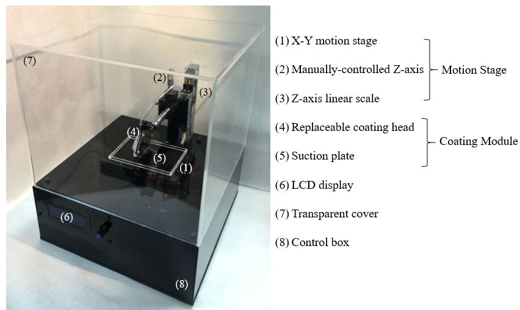
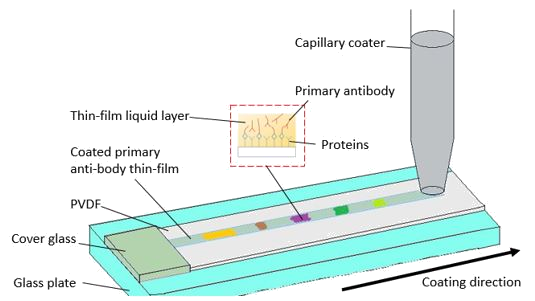
GRIN probe for in vivo imaging
Designed a device to polish GRIN (gradient-index) lenses for better image quality, and a connector to be sewn onto small animals for in vivo imaging. Lens polishing used a sequence of 30, 9, 3, and 1 µm films plus a final ADS polish, verified by imaging tissue-paper fibers and pollen samples.
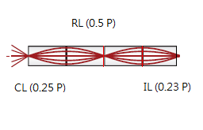
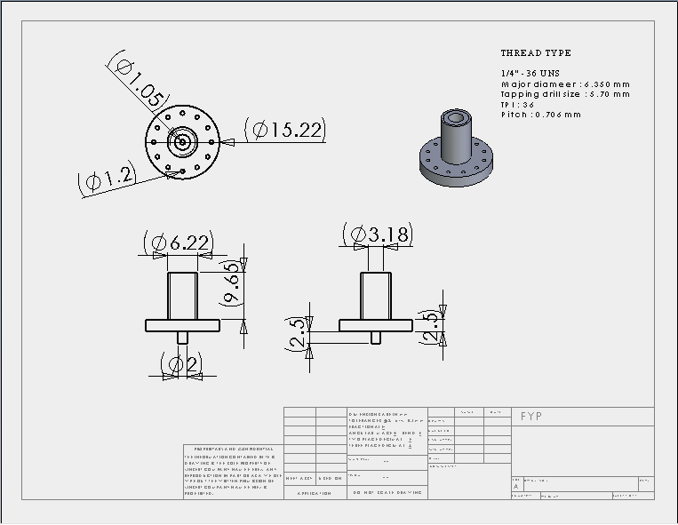
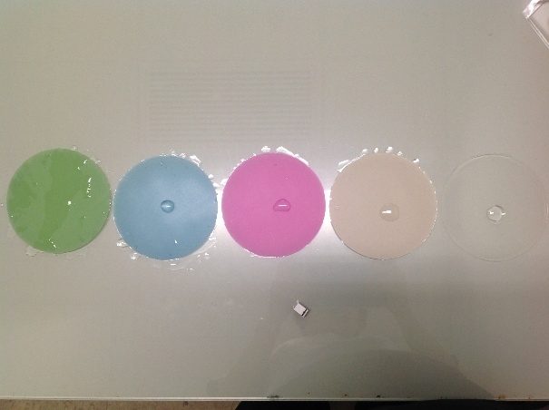
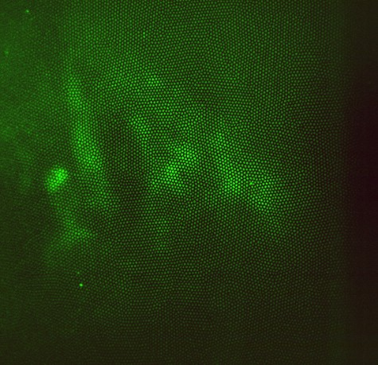
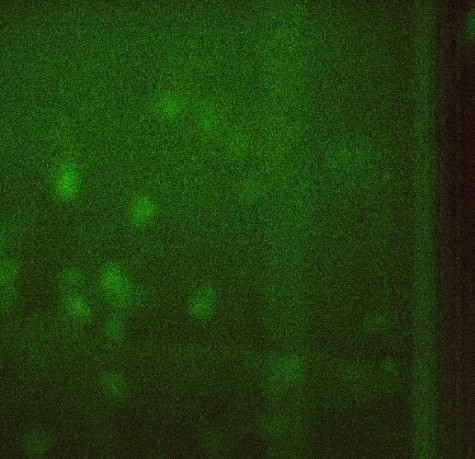